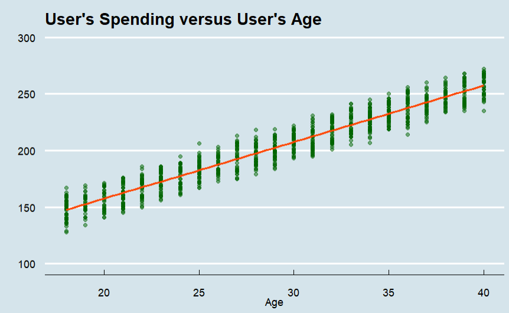
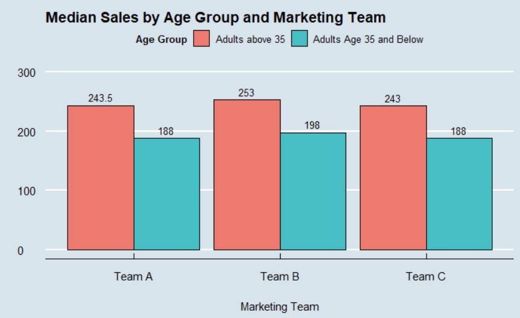
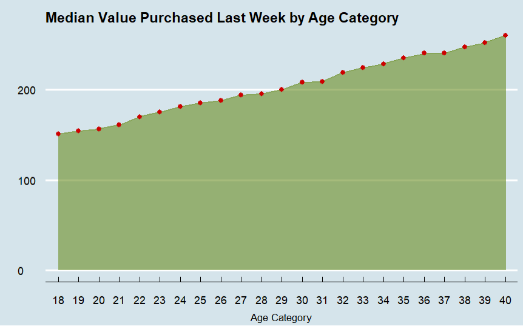
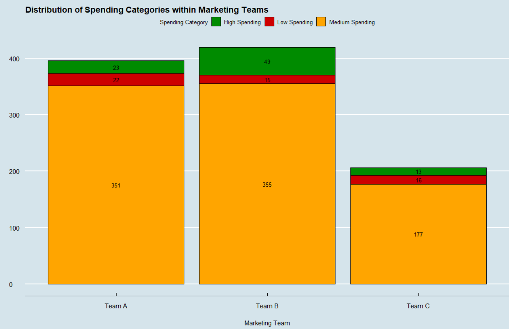
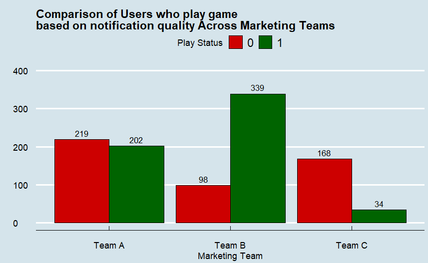

Key Insights from the Data

Figure 4: Relationship between user age and spending
Older Users Spend More
The scatter plot reveals a clear positive trend — as age increases, so does spending on the platform. This suggests greater purchasing power among older users.
Adults aged above 35 have average spending above $240, while younger users (despite being the majority) spend significantly less.
Most Spending is Mid-Range
The majority of users spend between $150 to $250 on the platform. Over 350 users in Teams A and B fall into this "medium spending" category.
Interestingly, when Team B explained the game's benefits, high-spending users increased from 23 (Team A) to 49 (Team B).
Quality of marketing communication directly impacts not just participation, but also the spending behavior of engaged users.
Notification Quality Matters
The jump from 8.63% (no notification) to 41.29% (detailed notification) represents a 5x increase in game participation.
Simply notifying users (Team A) boosted participation by 17.1%. But explaining the purpose and benefits (Team B) added another 15.56%.

Figure 5: Average sales by age category and marketing team

Figure 6: Median sales by age category and marketing team

Figure 7: Median sales trend by user age

Figure 8: Spending categories across marketing teams

Figure 9: Game participation rates showing impact of notification quality